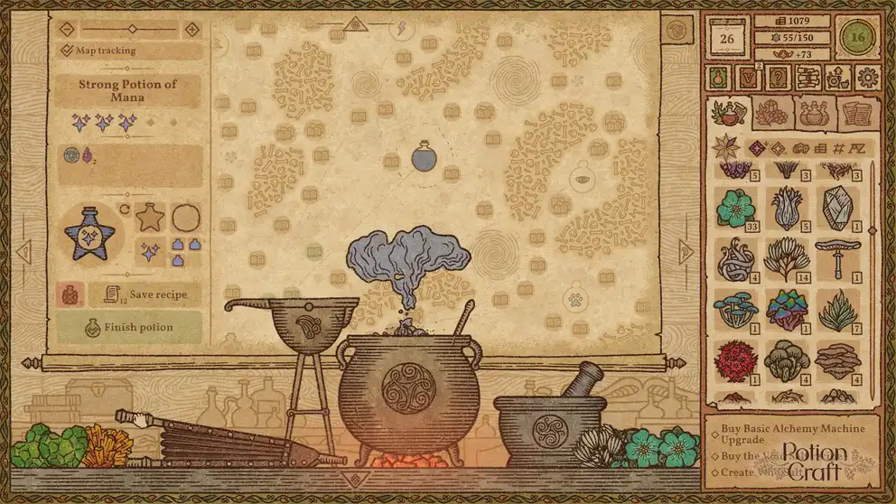

크래프팅
21,500원
5시간~15시간
Potion Craft는 판타지 세계의 연금술사가 되어 자신만의 물약 가게를 운영하는 게임이다. 플레이어는 허브, 버섯, 광물 등 다양한 재료를 절구에 빻고 가마솥에 넣어 물약을 제작한다. 특히 정해진 레시피를 따라가는 것이 아니라, 재료의 특성을 이용해 연금술 지도를 탐험하며 원하는 효과가 있는 지점까지 이동해야 한다. 제작한 물약은 손님들에게 판매하거나 퀘스트 해결에 활용할 수 있으며, 번 돈으로 새로운 재료를 구입하고 더 강력한 물약을 연구할 수 있다. 중세 필사본을 펼쳐놓은 듯한 독특한 아트 스타일과 직접 연금술을 수행하는 듯한 조작 방식이 특징이다.
niceplay games
https://store.epicgames.com/p/potion-craft-7656a2?lang=en-US
https://play.google.com/store/apps/details?id=com.niceplaygames.PotionCraft